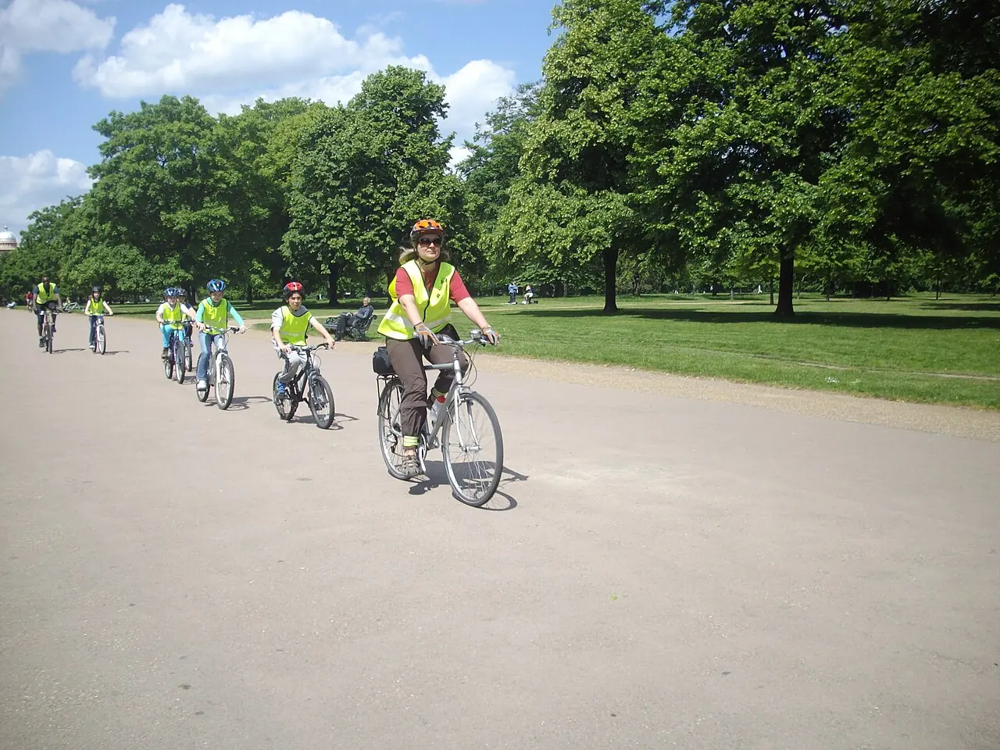

Groupes et structures
Des interventions sur mesure
Pour les écoles, les résidences seniors, les associations, les hébergeurs et les entreprises : des sorties et des ateliers adaptés à votre public.

Écoles et centres de loisirs
Apprentissage du vélo et de la circulation, dans l'esprit du programme « Savoir rouler à vélo », en séances régulières ou en stage.
Résidences seniors
Ateliers de remise en selle, découverte du vélo électrique ou du tricycle, sorties accompagnées autour de la résidence.
Associations
Sorties découverte, initiation pour les adultes qui n'ont jamais appris, balades conviviales pour vos adhérents.
Hébergeurs et offices de tourisme
Des balades guidées clés en main à proposer à vos visiteurs, sur la Belle Via et autour de Grenoble.
Entreprises
Sorties d'équipe, accompagnement des salariés qui veulent venir au travail à vélo.
Familles et amis
Anniversaire, cousinade, retrouvailles : une sortie à vélo organisée pour votre groupe.
Comment on travaille
Une proposition claire, adaptée à votre public et à votre budget.
Votre besoin
Le public, le nombre de participants, les dates, le lieu et vos objectifs.
Une proposition
Un programme détaillé, les conditions d'encadrement et un devis.
Le jour J
Accueil, vérification du matériel, et une activité menée de bout en bout.
Un projet pour votre structure ?
Décrivez-moi votre public et vos envies, je vous envoie une proposition.